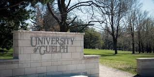

This page goes over the post-secondary education that I received during my time at university and while being in college, along with some career interests of mine.
In this program, I have learned of several geospatial subject matters and how to use various related technological tools to collect, manipulate & analyze geographic information. Below are few of the software's and subject matters learned from the program.
I had a great time at Guelph, though it was a challenge I learned so much at the program and helped me grow as an individual. Here is a link to the University of Guelph website to learn more: University of Guelph Homepage
The final project that I did at Guelph involved greenhouses in Leamington, Ontario and their biosecurity. Specifically, the health of cucumber, tomato and pepper crops as they become jeopardized due to the presence of plants and pathogens, particularly the pepper weevil that enter the greenhouse through non-agricultural pathways. The purpose was to provide industry specialists with an understanding of common greenhouse pests and their methods of transmission (within and between greenhouses) with the objective of improving biosecurity within greenhouse systems.
My roles included providing relevant sources for the annotated bibliography, gathering & evaluating information, final report preparation, assisting in developing the work plan, preparation of final compliance practices & recommendations. I also formed the goals/objectives section and was involved in forming literature review.
Throughout the years during my time in university and college, I had gone through working with different types of data within different industries. There are several subject matters within the GIS sector that I am interested in and would like to learn more about. These include the following: